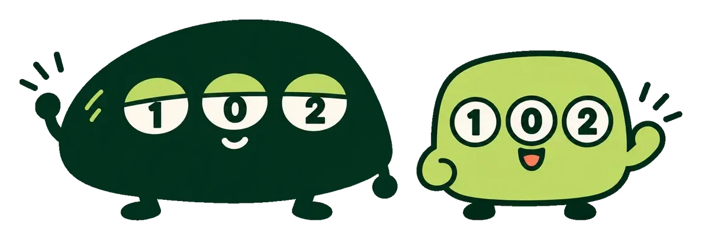

ABOUT感覚ではなく
データで予想する
totoCastは、Jリーグの順位・勝点・成績データをもとに、独自アルゴリズムでサッカーtotoの各試合の勝敗確率を算出し、予想として公開するサイトです
01
実績を隠さない
当たった回も外した回も、すべてアーカイブと統計ページで公開します
02
根拠のある予想
感覚ではなく、データに基づく確率で示します
03
改善し続ける
毎回の結果を自前データとして蓄積し、モデルを磨きます
免責
当サイトは非公式の情報提供サイトであり、スポーツくじ公式・Jリーグとは関係ありません。予想は独自推計で、的中を保証しません。くじの購入は自己責任で、19歳未満の購入は法律で禁止されています。
データの出典・権利表記
- toto投票率・当せん金・くじ結果：スポーツくじオフィシャルサイト（独立行政法人日本スポーツ振興センター）
- 試合結果・日程・出場停止情報：Jリーグデータサイト（公益社団法人日本プロサッカーリーグ）
掲載している数値は上記から取得した事実データを独自に集計・加工したものです。最新・正確な情報は必ず公式サイトでご確認ください。「toto」は独立行政法人日本スポーツ振興センターの登録商標です。